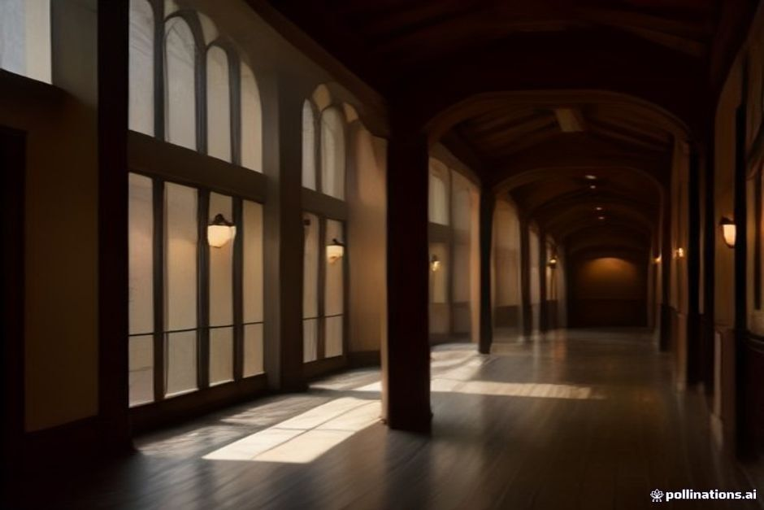
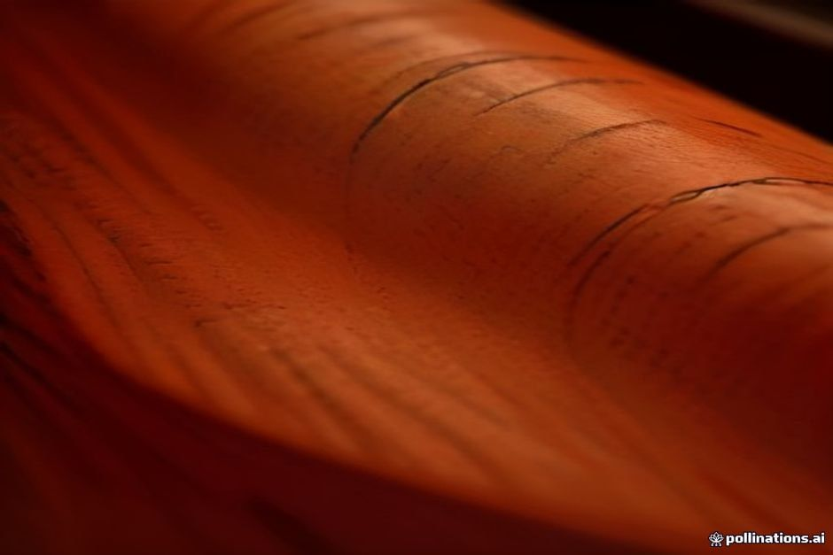

Madeira's weather can turn in minutes, and a mountainous interior that traps Atlantic cloud means somewhere on the island it's usually raining even when Funchal is dry. When it happens to be Funchal's turn, here are the ten indoor things actually worth doing — ranked by how well they fill a wet afternoon, not just how close they are to your hotel.
Does it actually rain a lot in Madeira?
Yes, but unevenly. Rain is most common in autumn and winter, roughly October to March, and falls hardest in the mountains and on the north coast, where Atlantic cloud hits high ground and drops its load. Funchal and the south coast sit in the rain shadow of the central peaks, so they see noticeably less — and even on a "wet" day, most rain arrives in short, passing bursts rather than settling in for hours. Still worth having a backup plan for the odd grey morning.

1. Museu CR7
A few steps from the Marina do Funchal, the CR7 Museum packs Cristiano Ronaldo's trophies, Ballon d'Or awards, golden boots and match shirts into a compact, well-lit space. It's open Monday to Saturday, roughly 10:00 to 18:00, and most visits run 30-45 minutes — long enough to be worthwhile, short enough to fit before lunch.
2. Old Blandy Wine Lodge
On Avenida Arriaga in the centre of Funchal, Blandy's has been ageing Madeira wine in the same cellars for around two centuries. A guided tour walks you through the tasting and ageing rooms before ending with a proper tasting of the island's styles — Sercial, Verdelho, Bual and Malmsey. It's open Monday to Saturday, with shorter hours on Sunday, and tours run in several languages throughout the day.
3. Madeira Story Centre
Tucked into the Zona Velha on Rua Dom Carlos, this small interactive museum walks you through the island's volcanic origins, its discovery in the 1420s, the sugar and wine trades, and up to the present day — a genuinely useful primer if you're seeing the rest of Madeira over the following days. It's open daily, roughly 09:00 to 19:00, entry is around €5, and there's a rooftop café if the rain is still going when you finish.
4. Colégio dos Jesuítas
Funchal's 17th-century Jesuit college and church, just off Largo do Colégio, is one of the best-preserved baroque complexes on the island — gilded altarpieces, blue-and-white azulejo tiles, and a bell tower you can climb for €1, with a small store of old crib figures and views over the historic centre from the top.
5. Quinta das Cruzes Museum
A 15th-century manor house turned decorative arts museum, with rooms of period furniture, silver and Flemish and Portuguese tiles, plus a covered stone-monument gallery in the grounds if you want a few minutes outside without getting wet. It's open Tuesday to Saturday, 10:00-12:30 and 13:30-17:30, and closed on Sundays and Mondays.
6. Mercado dos Lavradores
Funchal's covered market hall keeps you dry while you work through flower stalls downstairs, the tiled fish hall, and fruit you won't recognise upstairs. It's busiest — and most fun — on weekday mornings, and closed on Sundays.
7. Fortaleza de São Tiago
The deep-red 17th-century fort guarding the Zona Velha waterfront is free to walk around at any time, with thick stone ramparts, covered galleries and sea views that hold up just as well under cloud as under sun.

8. Aquário da Madeira, Porto Moniz
Built into an 18th-century fort on the north coast, this small aquarium holds moray eels, seahorses and small sharks in tanks lit like sea caves. It's a good move specifically when Funchal's rain is part of an island-wide system rather than a local squall — pair it with the drive around the north coast. Hours run roughly 10:00 to 18:00.
9. Forum Madeira or Dolce Vita
Neither shopping centre is glamorous, but both have multiplex cinemas, cafés and enough floors to burn a genuinely lost afternoon when the rain refuses to lift.
10. A poncha bar in the Zona Velha
Order a poncha — sugarcane rum, honey and lemon, muddled at the table — in one of the small bars along Rua de Santa Maria. It's indoors, it's out of the rain, and it's about as Madeiran an afternoon as you'll find under a roof.
What's the best area to base yourself for a rainy day?
Funchal's historic centre. Roughly between the Zona Velha and Avenida Arriaga, more than half this list sits within a 15-20 minute walk, so you're never far from shelter between stops — useful when a squall can start and clear inside an hour.
Rain in Madeira rarely lasts the whole day — it's usually a reason to swap the view for an hour, not cancel the trip.
None of this replaces a day on the water, which is still the island's headline experience — but the same short, local squalls that make a museum morning worth planning also mean an afternoon slot often clears in time. We keep an eye on the coast, not just the forecast, before calling a private boat trip with Chifbay on or off.